หินอัคนี (Igneous rock)
เป็นหินที่เกิดจากการแข็งตัวของแมกมาจากใต้เปลือกโลกที่แทรกตัวขึ้นมา
เราแบ่งหินอัคนีตามแหล่งที่มาเป็น 2 ประเภท คือ
- หินอัคนีแทรกซอน (Intrusive igneous rock) เป็นหินที่เกิดจากหินหนืดที่เย็นตัวลงภายในเปลือกโลกอย่างช้าๆ ทำให้ผลึกแร่มีขนาดใหญ่และมีเนื้อหยาบ
เช่น หินแกรนิต หินไดออไรต์ และหินแกบโบร
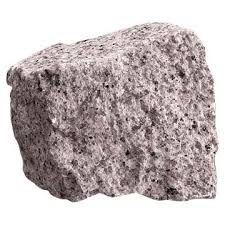
หินไดออไรต์
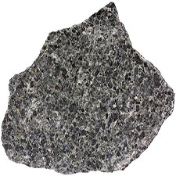
หินแกรโบร
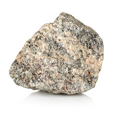
หินแกรนิต
- หินอัคนีพุ (Extrusive igneous rock) บางทีเรียกว่า หินภูเขาไฟ
เป็นหินหนืดที่เกิดจากลาวาบนพื้นผิวโลกเย็นตัวอย่างรวดเร็ว ทำให้ผลึกมีขนาดเล็ก และเนื้อละเอียด เช่น หินบะซอลต์ หินไรออไรต์ และหินแอนดีไซต์
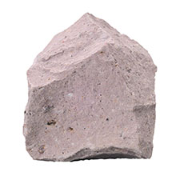
หินไรโอไลต์
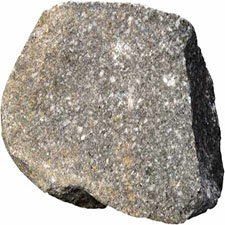
หินแอนดีไซต์
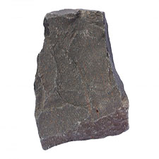
หินบะซอลต์
หินตะกอน (Sedimentary rock)
แม้ว่าหินจะเป็นของแข็ง แต่มันก็มิสามารถดำรงอยู่ได้อย่างถาวร หินเมื่อถูกแสงแดด ลมฟ้าอากาศ และน้ำ
หรือ ถูกกระแทก ก็แตกเป็นก้อนเล็กๆ หรือผุกร่อน เสื่อมสภาพลง เศษหินที่ผุพังทั้งอนุภาคใหญ่และเล็กถูกพัดพาไปสะสมอัดตัวกัน
เป็นชั้นๆ เกิดความกดดันและปฏิกิริยาเคมีจนกลับกลายเป็นหินอีกครั้ง หินที่เกิดใหม่นี้เราเรียกว่า หินตะกอน (Sedimentary rock)
ปัจจัยที่ทำให้เกิดหินตะกอนมีดังนี้
- การผุพัง (Weathering) คือ การที่หินผุพังทำลายลง (อยู่กับที่) ด้วยกรรมวิธีต่างๆ จากลมฟ้าอากาศ สารละลาย
และรวมทั้งการกระทำของต้นไม้ แบคทีเรีย ตลอดจนการแตกตัวทางกลศาสตร์ มีการเพิ่มอุณหภูมิและลดอุณหภูมิสลับกันเป็นต้น
- การกร่อน (Erosion) หมายถึง กระบวนการที่ทำให้สารเปลือกโลกหลุด
ละลายไป หรือกร่อนไป (โดยมีการเคลื่อนที่กระจัดกระจายไปจากที่เดิม) โดยมีต้นเหตุคือตัวการธรรมชาติ
ซึ่งได้แก่ ลมฟ้าอากาศ กระแสน้ำ ธารน้ำแข็ง การครูดถู ภายใต้อิทธิพลของแรงโน้มถ่วง
- การพัดพา (Transportation) หมายถึง การเคลื่อนที่ของมวลหิน ดิน ทราย โดยกระแสน้ำ กระแสลม
หรือธารน้ำแข็ง ภายใต้แรงดึงดูดของโลก อนุภาคขนาดเล็กจะถูกพัดพาให้เคลื่อนที่ไปได้ไกลกว่าอนุภาคขนาดใหญ่
- การทับถม (Deposit) เกิดขึ้นเมื่อตัวกลางซึ่งทำให้เกิดการพัดพา เช่น กระแสน้ำ กระแสลม
หรือธารน้ำแข็ง อ่อนกำลังลงและยุติลง ตะกอนที่ถูกพัดพาจะสะสมตัวทับถมกัน ทำให้เกิดการเปลี่ยนแปลงทางอุณหภูมิ ความกดดัน ปฏิกิริยาเคมี
และเกิดการตกผลึก หินตะกอนที่อยู่ชั้นล่างจะมีความหนาแน่นสูงและมีเนื้อละเอียดกว่าชั้นบน เนื่องจากแรงกดดันซึ่งเกิดขึ้นจากน้ำหนักตัวทับถมกันเป็นชั้นๆ
(หมายเหตุ: การทับถมบางครั้งเกิดจากการระเหยของสารละลาย ส่วนที่เป็นน้ำระเหยไปในอากาศทิ้งสารที่เหลือให้ตกผลึกไว้เช่นเดียวกับการทำนาเกลือ)
- การกลับคืนเป็นหิน (Lithification) เมื่อเศษตะกอนทับถมกันจะเกิดโพรงขึ้นประมาณ 20 – 40% ของเนื้อตะกอน
น้ำพาสารละลายเข้ามาแทนที่อากาศในโพรง เมื่อเกิดการทับถมกันจนมีน้ำหนักมากขึ้น เนื้อตะกอนจะถูกทำให้เรียงชิดติดกันทำให้โพรงจะมีขนาดเล็กลง
จนน้ำที่เคยมีอยู่ถูกขับไล่ออกไป สารที่ตกค้างอยู่ทำหน้าที่เป็นซีเมนต์เชื่อมตะกอนเข้าด้วยกันกลับเป็นหินอีกครั้ง
ตัวอย่างหินตะกอน
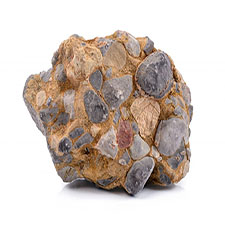
หินกรวดมน
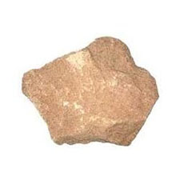
หินทราย
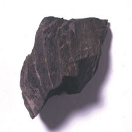
หินดินดาน
หินแปร ( Metamorphic Rocks)
หินที่เกิดจากการแปรสภาพไปของหินอัคนีหรือหินตะกอน ทำให้ลักษณะเนื้อหินและแร่ส่วนประกอบเปลี่ยนไป
สาเหตุเนื่องจากความร้อนและความกดดันสูงมากภายในโลก หินแปรส่วนใหญ่เกิดขึ้นในระดับลึกใต้เปลือกโลกหลายกิโลเมตร
ที่ซึ่งมีความดันสูงและอยู่ใกล้กลับหินหนืดร้อนในชั้นฐานธรณี อย่างไรก็ตามการแปรสภาพในบริเวณใกล้พื้นผิวโลกเนื่องจากสิ่งแวดล้อมโดยรอบก็ยังมี
นักธรณีวิทยาแบ่งการแปรสภาพออกเป็น 4 ประเภท คือ
- การแปรสภาพสัมผัส (Contact metamorphism) เป็นการแปรสภาพเพราะความร้อน เกิดขึ้น ณ บริเวณที่หินหนืดร้อนหรือแมกมาแทรกดันขึ้นมาสัมผัสกับหินท้องถิ่น
ความร้อนจากแมกมาทำให้หินท้องถิ่นแปรสภาพผิดไปจากเดิม ตัวอย่างเช่น เมื่อหินปูนได้รับความร้อนจากหินอัคนีแทรกซอนซึ่งเกิดขึ้นจากแมกมาก็จะแปรสภาพเป็นหินอ่อน
- การแปรสภาพบริเวณไพศาล (Regional metamorphism) เป็นการแปรสภาพของหินซึ่งเกิดเป็นบริเวณกว้างใหญ่ไพศาลเนื่องจากอุณหภูมิและความกดดัน
โดยปกติการแปรสภาพแบบนี้จะไม่มีความเกี่ยวพันกับมวลหินอัคนี และมักจะมี “ริ้วขนาน” (Foliation) มองเห็นเป็นแถบลายสลับสี บิดตัวแบบลูกคลื่น ซึ่งพบในหินชีสต์ หินไนส์
ทั้งนี้เป็นผลมาจากการตกผลึกใหม่ของแร่ในหิน ริ้วขนานที่เกิดขึ้นอาจแยกออกได้เป็นแผ่น และมีผิวหน้าเรียบเนียน เช่น หินชนวน
- การแปรสภาพแบบบด (Fault metamorphism) เกิดขึ้นบริเวณรอยเลื่อน แรงเสียดทานที่เกิดจากแผ่นธรณีเคลื่อนที่ผ่านกันทำให้เกิดความร้อนและความดันสูง
หินแปรที่เกิดขึ้นโดยวิธีนี้่ ได้แก่ หินไมโลไนต์ หินกรวดเหลี่ยมบด
- การแปรสภาพด้วยน้ำร้อน (Hydrothermal Metamorphism) เกิดขึ้นเมื่อน้ำที่ได้รับความร้อนจากหินอัคนีแทรกซอน นำพาประจุให้แทรกซึมเข้าไปในรอยแตกของหิน
ทำให้เกิดปฏิกิริยาเคมีกับแร่บางชนิดให้เปลี่ยนสภาพไป เช่น แร่เฟลด์สปาร์เปลี่ยนสภาพเป็นแร่เซริไซต์หรือดินขาว แร่ฮอร์นเบลนด์เปลี่ยนสภาพเป็นแร่คลอไรต์ เป็นต้น
ตัวอย่างหินแปร
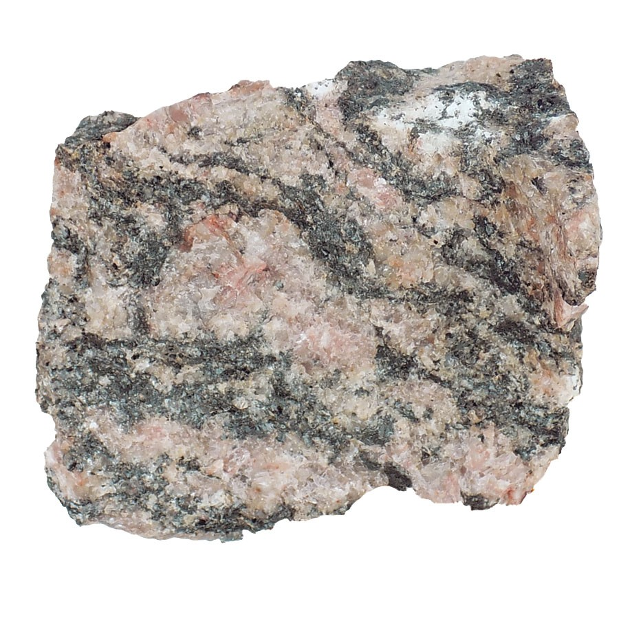
หินไนซ์
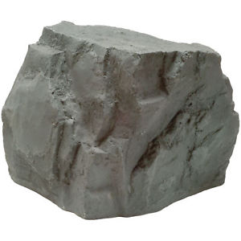
หินชนวน
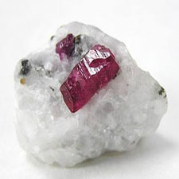
หินอ่อน
|